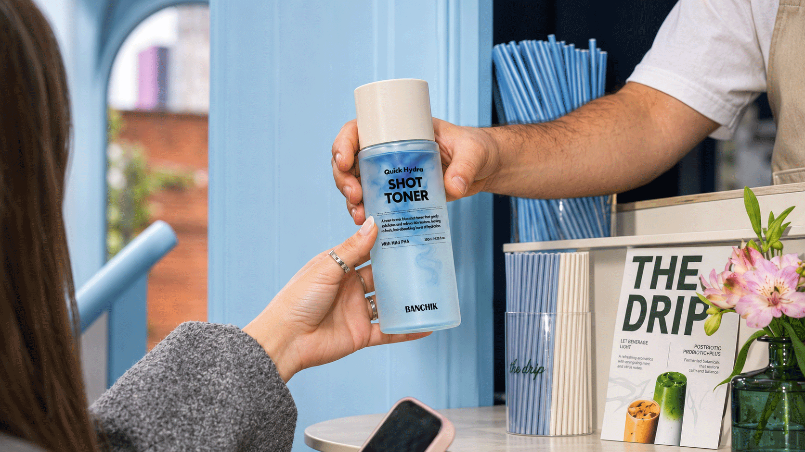
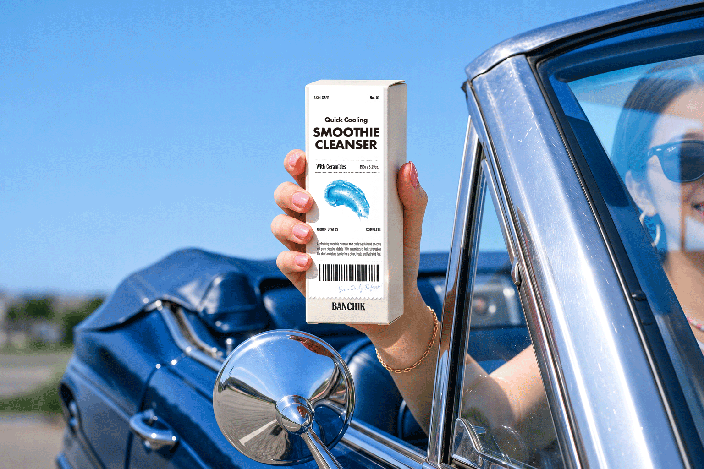
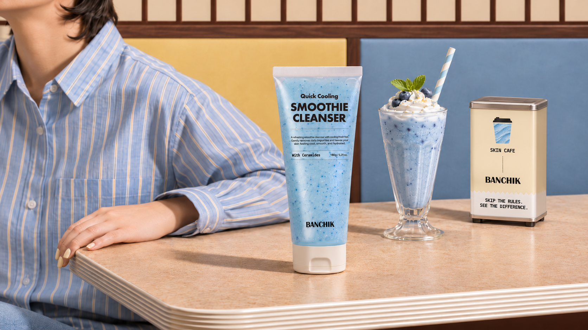
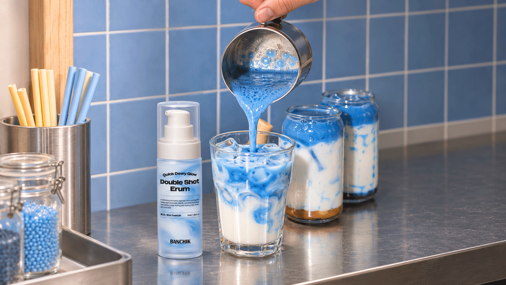
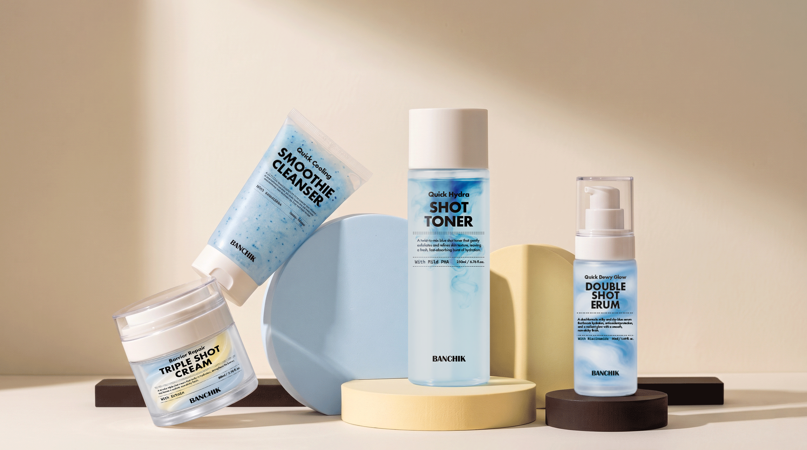
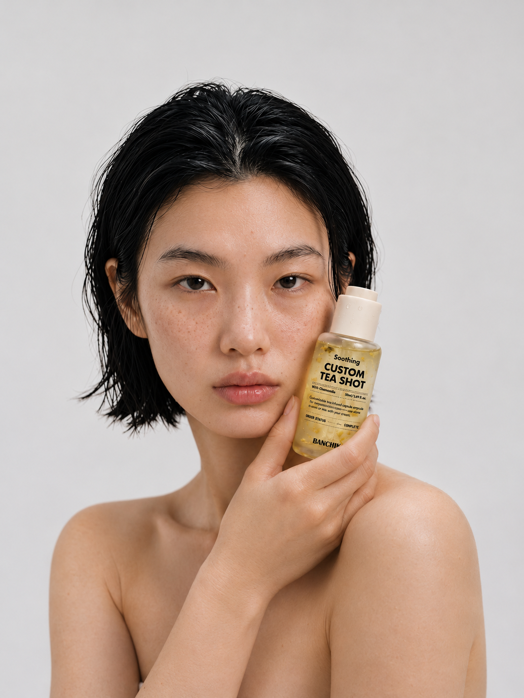

SKIN CAFÉ / FRESHLY PICKED SKINCARE
SKINCARE,
SERVED
FRESH.
피부에도 취향이 있으니까.
카페에서 메뉴를 고르듯, 오늘의 피부가 원하는 스킨케어를 골라보세요.

★ SKIN CAFÉ ★
YOUR
DAILY
REFRESH!
YOUR
DAILY
REFRESH!
YOUR SKIN, YOUR ORDER✳FRESHLY PICKED DAILY✳SKIN CAFÉ BY BANCHIK✳YOUR DAILY REFRESH!

span class="feature-note">YOUR DAILY SKIN CAFÉ ♡02 / THE BANCHIK WAY
A LITTLE
SKIN
CHEAT
CODE.
복잡한 루틴보다 오늘 피부에 필요한 한 가지.
‘반칙’은 카페의 메뉴판에서 영감을 받아, 스킨케어를 조금 더 쉽고 즐겁게 고르는 방법을 제안합니다.
03 / FRESH FROM THE CAFÉ
YOUR NEW
DAILY ORDER.
스무디처럼 산뜻한 클렌저부터, 한 잔의 샷처럼 골라 쓰는 스킨케어까지. 일상 속 카페의 순간을 닮은 반칙의 컬렉션.


04 / PICK YOUR DAILY FAVORITE
PICK.
MIX.
REFRESH.
어떤 날은 촉촉한 한 모금이, 어떤 날은 가벼운 리프레시가 필요하니까. 여러 가지 ‘샷’과 데일리 제품 사이에서 나만의 루틴을 만들어보세요.
FIND YOUR MENU ↗
05 / BANCHIK SKIN CAFÉ
GOOD SKIN
IS your THING.
정해진 정답 대신, 나에게 잘 맞는 선택.
매일 조금씩 달라지는 피부를 위한 나만의 메뉴.

BANCHIK — YOUR DAILY REFRESH
TAKE A
SKIN BREAK.
오늘의 피부가 원하는 메뉴는 무엇인가요?
SEE THE FULL MENU ↗